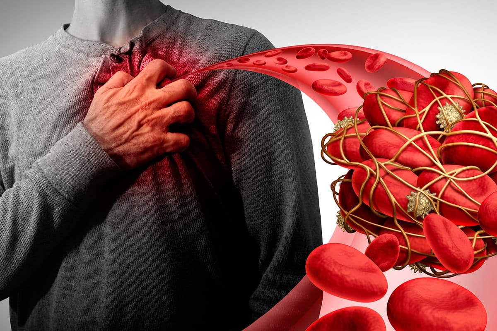
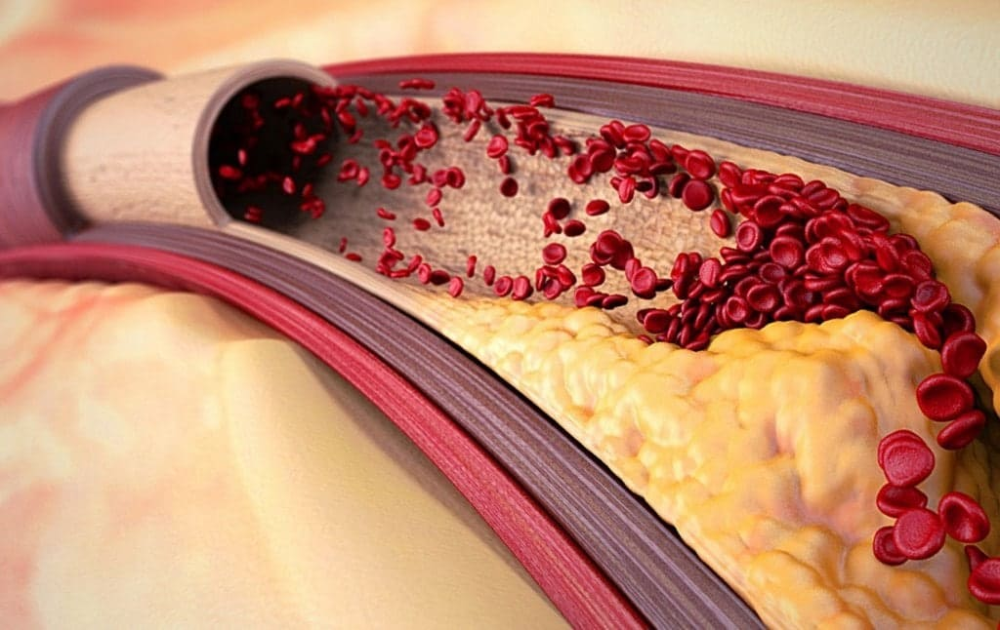
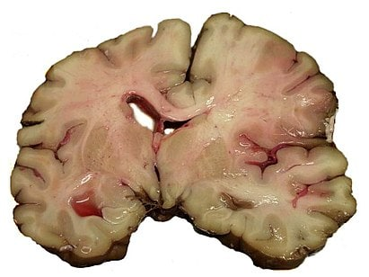
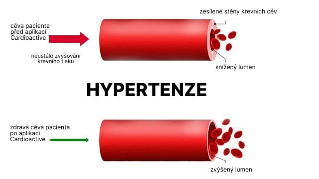
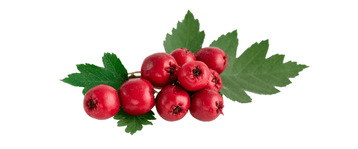
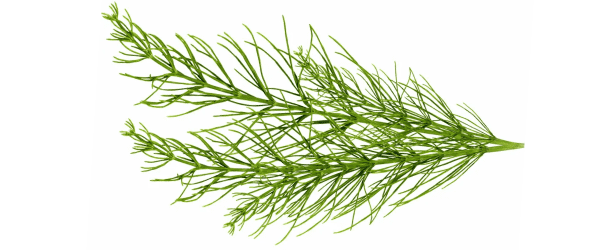

CENTRUM ARTERIÁLNÍ HYPERTENZE
Obchodní stránka

Líbí se mi

Kontaktujte nás


18 889 lidem se to líbí
CENTRUM ARTERIÁLNÍ HYPERTENZE
10 milionů Čechů už roky netuší, čím jsou nemocní. Produkt, který lékaři skrývají
Kardiovaskulární onemocnění jsou hlavní příčinou úmrtí po celém světě. Podle WHO na ni ročně zemře 3 milionů lidí, třetina z nich předčasně a před nástupem stáří.
Je nebezpečné, že onemocnění si může vybrat každý, dokonce i mladý a zdravý člověk a je asymptomatický. Bohužel není možné předpovědět, koho a kdy tento hořký osud postihne, o kterém se léta nedá odhadnout.
Bolest hlavy, palpitace srdce, černé tečky v očích, chronická únava, apatie a kolísání tlaku jsou příznaky srdečního onemocnění, jako je hypertenze. Často hypertenze doprovází další onemocnění a způsobuje vážné komplikace kardiovaskulárního systému.
Lékař z Výzkumného ústavu, který v Česku studuje kardiovaskulární onemocnění, komentoval situaci se srdečními chorobami v zemi a dal jednoduché doporučení, jak se nemoci snadno a bezpečně zbavit.
Na to nemusíte trávit spoustu času a peněz. Existuje spolehlivý produkt doporučený zkušenými lékaři. A čím dřív přijmeš opatření, tím líp pro tebe.
Naše redakce se zavolala s televizní moderátorkou Markétou Suchánkovou a ona řekla nám o účinném přípravku proti hypertenzi, který zachránil život jejímu otci.
Televizní moderátorka Markéta Suchánková
"Mému otci je 67 let, je hypertenzní. Při poslední návštěvě záchranky mu lékaři doporučili, aby si pořídil tlakový deník. Čísla v ten den prostě překročila: 227/115, 226/114, a tak po celý den několik dní po sobě.
Někdy se stalo, že tonometr prostě nemohl vytlačit jeho tlak a vydal chybu! Bojím se i rozmyslet, jaký měl v tu chvíli tlak.…
Nejhorší je, že otec nic necítí, i když má tlak 230 a vyšší. Když musím jít do práce, bojím se, že se tátovi může něco stát a já nemůžu být poblíž, abych pomohla.
Slyšela jsem na záznamu programu, že každý 7 Čech umírá na srdeční onemocnění a 5 z nich je zcela nečekané, když jsou ukazatele tlaku po dlouhou dobu normální nebo srdeční onemocnění nejsou vůbec diagnostikovány.
Lékaři nám řekli, že hypertenzi nelze vyléčit. Proto každý půlrok chodíme na vyšetření a injekce. A pak zase ten vysoký tlak na celý den. Upravili stravu, přidali lehkou fyzickou námahu, ale výsledek nebyl.
Známý kardiolog hovořil o novém produktu , který získává popularitu. Hned jsem si ho objednala.
I když naděje, upřímně řečeno, vůbec nebyla. Ale známý řekl, že pomáhá urovnat kardiovaskulární systém na více než 70%.
A překvapivě se táta zlepšil: tlak se pomalu začal zotavovat, záchvaty se vyskytovaly méně často. Díky bohu, že už jsou dávno pryč.
Používáme zatím téměř 6 týdnů. je naše spása!! Měli jsme štěstí, že jsme ho našli. Zkuste to a budete překvapeni výsledkem! Konečně budete moci dýchat z plných plic s radostí, že jste našli produkt, který opravdu pomáhá".
Hovořili jsme s kardiologem z Ústavu pro zdraví v ČR. Řekl nám více o hypertenzi a odhadl účinnost kapiček . Zde je to, co jsme se dozvěděli:
Příznaky hypertenze
Hypertenze je onemocnění kardiovaskulárního systému, které je způsobeno stabilním zvýšením krevního tlaku.
Doprovází mnoho onemocnění a často způsobuje nebezpečné komplikace kardiovaskulárního systému: mrtvice, infarkt myokardu, hypertenzní krize a mnoho dalších.
Řez mozku člověka, který zemřel na mrtvici
Existují takové příznaky hypertenze:
- bolest hlavy;
- zrychlený srdeční tep;
- černé tečky nebo skvrny před očima, rozmazané vidění;
- hučení v uších;
- chronická únava;
- apatie, nervozita, ospalost;
- silné závratě;
- pocit tepla bez zvýšení tělesné teploty.
Čím je tato nemoc tak nebezpečná?
Často nemá žádné projevy. U 90% hypertenzních pacientů zvýšení tlaku nezpůsobuje změny stavu.
Pokud tuto nemoc ignorujete, nevyhnutelně to povede k závažným onemocněním, které představují skutečnou hrozbu pro váš život.
Způsobuje mnoho nebezpečných komplikací a je často doprovázena dalšími onemocněními (mrtvice, infarkt myokardu, porucha cerebrální cirkulace, prasknutí aorty, selhání ledvin a další). Pokud si všimnete některých příznaků, naznačuje to, že hypertenze již způsobila komplikace. Proto je nutné okamžitě přijmout opatření a zbavit se hypertenze.
Může se objevit u zdravých a mladých lidí.
Není léčena až do konce, v důsledku čehož musíte vybrat produkt, který bude možné používat po dlouhou dobu a nepoškozovat vaše zdraví.
Náhlá smrt nastává v 17% případů.
Názor expertů

`Bohužel v drtivé většině případů nelze vyléčit arteriální hypertenzi a je nutná dlouhodobá léčba po celý život.
Je velmi důležité ve fázi diagnostiky předepsat správnou léčbu. Pokud je léčba náhle přerušena, povede to k rychlému zvýšení krevního tlaku.
Hlavním problémem léčby kardiovaskulárních onemocnění - nejčastěji jsou pacientům předepsány standardní léky, které způsobují vedlejší účinky nebo nemohou být vůbec předepsány kvůli kontraindikacím.
Proto jsme v roce 2020 začali vyvíjet produkt proti hypertenze . Za tímto účelem jsme sestavili nejúčinnější komponenty a testovali výsledný vývoj na našich pacientech.`
pomáhá dlouhodobě normalizovat krevní tlak a zabraňuje vzniku dalších kardiovaskulárních onemocnění, nezpůsobuje nežádoucí účinky a je vhodný pro 99% našich zákazníků.
Kdo je v rizikové skupině
Rozlišujeme tyto rizikové faktory:
- další onemocnění srdce a cév;
- nadváha, obezita, cukrovka;
- nadměrný příjem soli, podvýživa;
- nízká pohyblivost;
- změna počasí, magnetické bouře.
Senzační objev vědců českého zdravotního ústavu
Podle lékařských studií se rychlost vývoje kardiovaskulárních patologií a komplikací v posledních letech rychle zvyšuje.
Pokud nepřijmete naléhavá opatření nebo použijete neúčinnou léčbu, ve vašem těle se nevyhnutelně spustí silné patologické procesy, které povedou ke zvýšení rizika závažných následků.
Potíž je, že krevní tlak se v průběhu času zvýší, což přispěje k destrukci vašich cév a vnitřních orgánů.
Tým vědců z Výzkumného ústavu v ČR od roku 2020 vyvíjí recept na inovativní produkt pro kardiovaskulární onemocnění.
Při vytváření vědci pečlivě vybrali komponenty a jejich proporce. Účinnost přípravku je klinicky prokázána. Také provedli studii s více než 200 dobrovolníky. Část z nich pila placebo, druhá . Výsledek příjemně překvapil vědce.
Po týdnu aplikace kapek se vaše cévy začnou zotavovat.
Bohužel, prudký přechod na správnou výživu a sportování vám nemůže poskytnout záruku, že jste v bezpečí a problém je pryč. Kromě toho mohou drastické změny poškodit, protože vaše tělo bude ve stresu.
V moderním životě nemůžete jen tak změnit své návyky a vzdát se svého oblíbeného jídla a nápojů. Bude efektivnější používat : pomůže posílit stěny cév a normalizovat tlak.
Hypertenze se stále častěji vyskytuje u mladých lidí a zpočátku může být asymptomatická. Ale jsme vytvořili , abyste se cítili zdraví a šťastní!
Složení
Při výrobě kapiček byly použity pouze přírodní a osvědčené komponenty. - 100% přírodní komplex rostlinných extraktů. Pomáhají bezpečně snížit tlak, normalizovat činnost srdečního svalu a zabraňují tvorbě plaků cholesterolu na stěnách tepen. Složení preparátu zahrnuje:
extrakt z hlohu - pomáhá odstraňovat plaky cholesterolu ze stěn tepen a zlepšuje prokrvení tkání a srdce. Pomáhá obnovit pružnost cév a kapilár;
extrakt srdečníka - pomáhá odstranit cévní křeče a normalizovat krevní tlak. Pomáhá eliminovat nervozitu, dušnost, bolesti hlavy a zvonění v uších. Pomáhá zlepšit náladu a normalizovat spánek;
extrakt z chmele - pomáhá vyčistit krev, eliminovat malé aneuryzmy a normalizovat srdeční frekvenci. Pomáhá předcházet rozvoji kardiovaskulárních onemocnění: infarkt, mrtvice atd.;

extrakt přesličky rolní - pomáhá posílit a obnovit stěny cév, eliminuje všechny jejich mikropotraviny;
extrakt z třezalky tečkované - pomáhá vyčistit krev, eliminovat malé aneuryzmy a normalizovat srdeční frekvenci. Pomáhá předcházet rozvoji kardiovaskulárních onemocnění: infarkt, mrtvice atd.;

Pravidelný příjem kapek pomůže posílit krevní cévy a zlepšit prokrvení tkání a srdce, pomáhá eliminovat dušnost, únavu a otoky nohou. Pomůže zabránit vzniku kardiovaskulárních onemocnění: infarktu myokardu, infarktu, arytmie, aterosklerózy atd.
Jak funguje
Kapky pracují ve 3 krocích:
- 1. Pomáhají normalizovat krevní oběh
- Pomáhají eliminovat účinky špatného krevního oběhu
- Pomáhají zvyšovat pevnost a pružnost stěn cév.
Podporují oběhový systém, takže krev začíná proudit přes cévy do všech orgánů a tkání. Tepny se rozvětvují a tvoří síť kapilár, ve kterých dochází k výměně látek mezi krví a tkáněmi. Pomáhají rozpouštět aterosklerotické plaky a krevní sraženiny.
Přispívají ke snížení příznaků onemocnění, jako je hypertenze, bolesti hlavy, závratě, horečka v těle. Pomáhá normalizovat hmotnost a metabolismus lipidů.
To pomáhá předcházet tvorbě nových plaků a snižuje riziko mrtvice 9krát.
Použití: 2krát ročně s diagnostikovaným onemocněním, pro prevenci jednou za 1,5 roku. Doba kurzu je 1,5 měsíce, s výraznými příznaky oběhové poruchy - 2 měsíce. Nejlepší výsledek je dosažen při použití po dobu 30 dnů nebo více.
Slevy: Výrobce pravidelně pořádá akce a dává možnost koupit výhodnější. Pro různé kategorie občanů jsou jejich nabídky, manažer vám o nich poví.
Náklady: Tyto kapky si může dovolit člověk s jakýmkoli finančním příjmem.
Doručení: Nemusíte hledat kapky v lékárnách nebo je jít do výdejního místa. Místo toho se s vámi kurýr dohodne na vhodném čase a dodá Vám zboží do rukou.
POZOR: Jedná se o speciální nabídku výrobce. Nenechte si ujít možnost vyzkoušet se slevou 50%!

2785
Simona Slánská
Dlouho jsem trpěla hypertenzí, neustále ztracela vědomí. V práci jsou kolegové už na to zvyklí, mám občas i záchvaty. Tlak vyskočí, hlava bolí, teplota dokonce stoupá. V noci mám tachykardii. Lékaři mě děsili možností mrtvice, protože cévy takové výkyvy nemusí dlouho vydržet. Bála jsem se, protože můj dědeček zemřel právě na mrtvici. Dozvěděla jsem se o kapkách náhodou, viděla jsem zmínku v lékařském článku a rozhodla jsem se to zkusit. Piju je už čtyři týdny. V důsledku toho se můj krevní tlak stabilizoval a bolesti hlavy prošly a neruší mě už měsíc. Cítím se mladá, zdravá a plná síly. Doporučuji všem!
38
2 dny
Líbí se mi
Odpovědět
Více podrobností
Pavlína Posejpalová
Obešla jsem už tucet kardiologů a bylo to k ničemu. Každý předepisuje své léky, všechno je zmatené, tablety způsobují spoustu vedlejších účinku, nic není pro vhodné. Během dne dochází k několika tlakovým skokům. Dlouho se snažila najít vhodný způsob a teprve s se začala cítit lépe. 3 den přijetí kapek se příznaky uklidnili, konečně! Už jsem to skoro stihla vše vzdát...
54
2 dny
Líbí se mi
Odpovědět
Více podrobností
Michala Černá
Lékař mi diagnostikoval arteriální hypertenzi a sinusovou tachykardii. Byla jsem poslán na konzultaci s kardiologem, ona mi také diagnostikovala arteriální hypertenzi 1. stupně a sinusovou tachykardii. Slyšela jsem o od známých, týden po podání zmizely všechny příznaky. Velmi mě to překvapilo. Teď se cítím o 20 let mladší, stejně zdravá a šťastná!!!
81
3 dny
Líbí se mi
Odpovědět
Více podrobností
Pavel Novák
Je dobře, že máme lékaře, kteří se případem zabývají! Je to pocit, že ostatní jen hrají na doktory, vypisují srdíčka a jen je nutí trpět ještě víc. Sám jsem si dříve kupoval velmi drahé léky, které mi byly předepsány v nemocnici. Ale jen dočasně odstranili příznaky. Pak jsem si sám prostudoval nabídky na internetu a koupil . To je jedno z nejlepších řešení v boji proti kardiovaskulárním chorobám! Najednou se mi ulevilo! Až do svých 52 let jsem se cítil jako bezmocný stařec. Vypil jsem zatím jeden kurz. Předtím jsem seděl na antihypertenzních tabletách. Neustále je bolela hlava, srdce, byla apatie a chyběla radost ze života. Takže vám doporučuji objednat tento doplněk za každou cenu, nebudete litovat! Myslím, že lékaři nám tyto kapky záměrně tají, protože je pro ně výhodné, aby se dostali do zboží, za které jsou placeni výrobci.
90
3 dny
Líbí se mi
Odpovědět
Více podrobností
Pavel Čermák
Teta začala mít necitlivost prstu na rukou a nohou, lékař doporučil jeden cévní lék, ale je velmi drahý a v komentářích píše, že způsobuje rakovinu střev. Nakonec jsme se rozhodli následovat radu známé ženy a koupili . Po 1 měsíci byla necitlivost pryč. Navíc se zlepšila kvalita vlasů, kůže, nehtů. Objevila se energie, živost, přestala být obtěžována vysokým tlakem.
48
4 dny
Líbí se mi
Odpovědět
Více podrobností
Lucie Maternová
Je mi 61 let a před pěti lety jsem začala čistit krevní cévy. mi pomáhá udržovat zdraví a dává sílu. Cítím se skvěle, i když mnozí z mých kolegů už jsou mrtví. Čištění krevních cév je nutné na 100%!
50
5 dní
Líbí se mi
Odpovědět
Více podrobností
Tomáš Suchánek
Mám za sebou 1 kurz a CÍTÍM SE ÚŽASNĚ. Tlak mám v pohodě, hlava mě nebolí. To se už dávno nestalo. Doporučuji všem :)
42
5 dní
Líbí se mi
Odpovědět
Více podrobností
Jan Žďárský
Teď jsem ve věku, kdy se musím starat o své zdraví. Možná bych měl začít s . Navíc je velmi snadný v použití.
12
5 dní
Líbí se mi
Odpovědět
Více podrobností